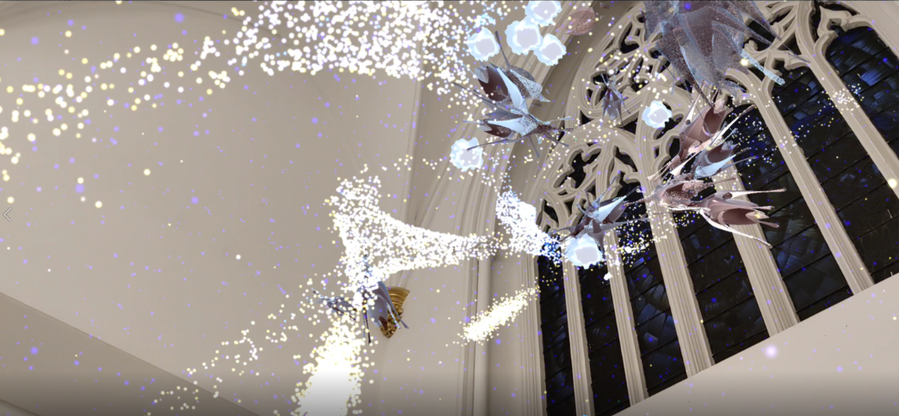
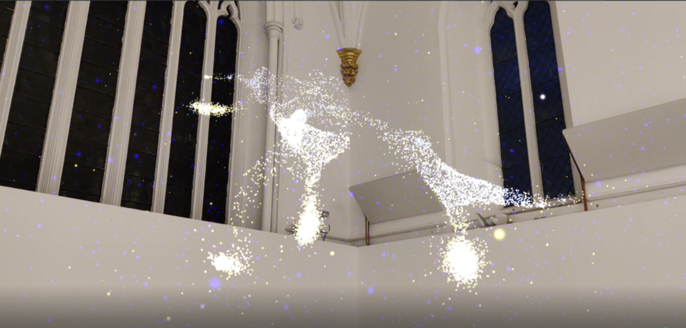

Introduction
This is a site-specific, interactive MR (Extended Reality) piece, namely, ‘Generation by Light ’. Audiences can witness a fantastic digital tree made of light from a phone being unfolded mainly based on St James church (See picture1 & 2). Furthermore, the wonderful fruits (creatures) are grown on the tree, when players interact with the seed hidden under the floor.
Picture1 Picture2
Concept and Background Research
Augmented reality is a good way to bring solid physical space to different dimensions. This is because virtual spaces can be rebuilt more easily than physical spaces, and I am very curious about the alternative possibilities of the physical space in which I often live (See pictures 1，2, and 5 - 8). To reference my previous work, ‘Unfold’1(2023) (See pictures 3 & 4), which is an interactive installation piece to explore the interaction between virtual and physical books, as this serves as inspiration for ‘Generation by Light’. Another piece that inspired me is ‘The Deep Listener’ by (2019)2 (See picture 9, 10, 11 & 12) which is “an audio-visual ecological expedition through Kensington Gardens and Hyde Park”. This work gives me the feeling that life is connected to this music in a resonant way, in the meantime, it is the perfect visual reference in my work. The new journey combines previously mentioned physical space, that is relative to me and my imagination, to create a hybrid space that is different to the physical space. More specifically, ‘Generation by Light’ creates three elements; one is a flooding twisting tree trunk constructed by a hundred and thousand fluid luminous points which grow in front of the rose window in the church, the second element is tree of the colorful crystal fruits in, the third element is the silver seeds of fruits. In this project, light and curves are the main media to organize creatures in the virtual world. The abstract tree trunk symbolizes the source of creation and given that is the trunk constructed by the fluid luminous particles, the rose window acts as a communicator, translating the light from the outside of the building into the language of the building's interior. In terms of interaction, the audiences will be able to find the sliver seeds under the floor of church by touching the screen of a phone, enabling them to participate in the interaction with the trunk growing different fruits from seeds.
 The result

Picture3 Picture4
The trees are full of life as I see them daily. picture 5, 6, 7 & 8
‘The Deep Listener’ by Jakob Kudsk Steensen (2019). picture 9, 10, 11 & 12
The sketch of the trunk. Picture 13
The model of the trunk version 1.0. The inspiration of the shape comes from the trees on the road. Picture 14 Picture4
The sketch of the trunk. Picture 13
The model of seed. The inspiration of shape comes from the stamens on the road. Picture 18.
Technical Implementation
Unity, AR Foundation framework, plane checking, VFX graph (The Visual Effect Graph), Shader graph, Rhino, and Phone are all included in ‘Generation by Light’. There are four technical phases in which includes two status; a standard state where a trunk is constructed by fluid luminous particles generated from the rose window on the view of the phone (See picture 19), another interactive status where colorful fruits are created from the trunk while the sliver seeds are triggered by audiences touching the screen from the floor of the church or the plane in the space (See picture 20). At this time, I have completed first three phases, First, Plane checking, created by Rebecca Aston (2023)3 was chosen as the main interaction for the work based on ARfoundation, as this function fits the conception of discovering seeds under the floor (See picture 23), another most important reason is for the accuracy of position to display the trunk. Next, in terms of key vision (See picture 25-27), the particle trunk plays the main role in the scene made by the VFX graph as I consider the flowing light to construct a tree trunk from the rose window. Third, regarding interaction, the fruits grow and disappear depending on detecting collision by seeds (See picture 29-35). The fruit will grow up If the seeds enter the area of the box collider for fruit and the fruit will fade out when the seeds come to the box collider again. Seeds grow and disappear from the tree as the cycle of life. Finally, one UI (user interface) is designed to guide the audience to touch the flood on the phone for trigger seeds (See picture 36).

The standard status on the sketch. Picture 19. The interactive status on the real scene. Picture 20.
Step1: adapting plane Checking
The sliver seeds can be triggered from the floor (See picture 23) by replacing the model with placement Prefab (See picture 22).
Picture 22. The sliver seeds were triggered. Picture 23.

To remove the detection border and replace the transparent material with the detection plane to prevent visual disturbance. Picture 24.
Step2: The particle trunk
The tree2.0 FBX type (See picture 15) was transfer SDF type to the VFS system, referencing by GAME VFX (2020), by GAME VFX 4
This process of growth and demise for trunk. Picture 25-27
The Fruit did not appear when the value of grow is less than –0.84, Picture 29.
The Fruit did not appear when the value of grow is less than –0.84, Picture 30.
The logic that affects the appearance and disappearance of fruit is through the control of black and white pixels in the alpha channel. Picture 31 & 32
Fruits will not appear if the collider of fruit and seed does not intersect. Picture 33

The fruit appears if the collider of fruit and a seed intersect. Picture 34 The script of shader. Picture 35
The last step: UI (user interface)
The finger touches the plane surrounded by green particles. Picture 36
Reflection and Future Development
I believe that this endeavour came close to achieving what I had originally suggested. This is because I successfully built the basically interactive virtual world in AR with physical space. In my perspective, this endeavour taught me a tone of fresh information. For instance, I learnt how to build the AR scene to my phone, and the shader graph is very powerful material for interacting, and VFS graph is easy to build the particle system and it is also the most intriguing aspect for me. However, I don’t do well at feedback of interaction. Therefore, the audiences may not realize when they have been interacted. For my future iteration, I will focus on user experiences. For example, I will make some sounds and the effects when the audiences trigger the fruit to come out.
References
- The Deep Listener (2019). by Steensen, J K . www.youtube.com[Online] Accessed: (86) The Deep Listener: Jakob Kudsk Steensen - YouTube
- Unfold (2023 , Jan, 16). by Lin, W. www.vimeo.com[Online]. Accessed:Unfold on Vimeo
- Extended Reality for Creative Practice (2022-23), by Aston, R . https://learn.gold.ac.uk/[Online]. Available: Course: IS71105B: Extended Reality for Creative Practice (2022-23) (gold.ac.uk)
- Prod, G A. Title of Video: Unity Shader Graph - Grow Vines | Trees Tutorial. (04 20, 2021). Accessed: 04 25, 2023. [Online Video]. Available: Unity Shader Graph - Grow Vines | Trees Tutorial
- GAME VFX. Title of Video: Unity VFX Graph Tutorial How to bake SDF and use in Visual Effect Graph. (12 15, 2019). Accessed: 04 25, 2023. [Online Video]. Available: https://www.youtube.com/watch?v=UOrsOO9QmUc&t=513s
- MitMac Games. Title of Video: Creating force field with shader graph. (4 14, 2023). Accessed: 04 25, 2023. [Online Video]. Available: https://www.youtube.com/watch?v=vhXAD3iOkzY&t=349s